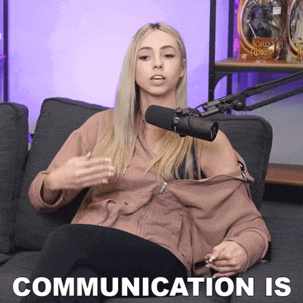
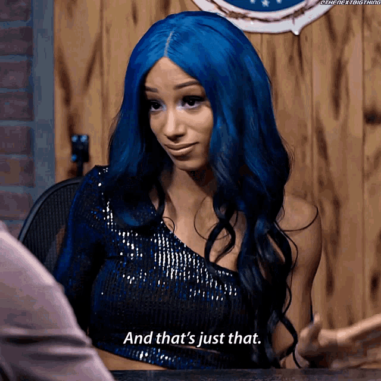

Your Job Description is Costing You Good Candidates
You need to fill a critical role. The hiring manager is ready to go, you’ve got a great hiring committee. And then your HR team asks for a job description. In most organizations, writing a job description looks something like this:
- Dust off the version from three years ago (or use an outdated template)
- Update the title
- Swap out a bullet or two
- Post it before lunch
Done.
And then the chaos begins.
Hundreds of applications flood in, half of which are from people who are wildly underqualified. Interview schedules spiral out of control. Hiring managers and the HR team start debating what they actually want (or need) in a candidate. Weeks pass, until eventually all the best candidates slip away to a competitor who had their act together.
Sound familiar? This cycle repeats itself in organizations of every size, across every industry, and it almost always traces back to the same root cause: a job description that was treated as an afterthought instead of a strategic asset.
A job description is more than just a recruitment tool. It is a declaration of intent. It is a document that tells the world, your team, and your future hire exactly what you're building, why this role matters, and what they’ll get from the experience.
The Unqualified Applicant Problem
There's a myth in hiring that casting a wide net is always the way to go.
And in theory, this sounds reasonable. More applications = more choices = better odds. Right?
In practice, though, this is how hiring managers lose weeks of their lives reviewing résumés and interviewing candidates who never would have been a good fit.
A detailed, well-crafted job description acts as a self-selecting filter. When you articulate the specific skills, experience levels, tools, contexts, and expectations clearly and honestly, unqualified applicants self-select out, and often do so before they even apply. The candidates who do apply arrive having read the full picture and decided, "Yes, this is for me."
That's not limiting your talent pool. That's respecting everyone's time, including your own.
What To Do Instead?
Job descriptions are full of meaningless words and phrases. For example, instead of "strong communication skills required," try: "You'll present strategic recommendations directly to C-suite stakeholders on a monthly basis and distill complex data into clear narratives for non-technical audiences." Suddenly, the applicant knows exactly what the bar is, and you’re defining what you actually mean by “strong communication skills.”
The ones who belong will lean in.

Here's a question - does your current job description tell a candidate what success looks like in year three, or just in week three?
Short-term task lists are table stakes. But candidates who are serious about career growth (like the high performers you want to attract) want to understand the trajectory of a role, not just its current state. They're placing a bet on where their career goes next.
When your job description articulates long-term expectations (like where the role could evolve, how it connects to the broader organizational strategy, what success looks like at 12 months and beyond) you're having a more honest and more compelling conversation with your prospective hires from the very first touchpoint.
When you do this, you start to attract candidates who are thinking that far ahead themselves, and those are the people you want.
Forget About the Gut-Check
Left to their own devices, hiring committees can veer dangerously close to the "I'll know it when I see it" school of candidate evaluation. This is a dangerous place because it’s subjective, (everyone’s gut check is going to tell them something different), it's inefficient (how do you align everyone’s feelings?), and it's a liability (hello unintentional discrimination claims!).
A thorough job description forces alignment before the process even begins. It requires hiring managers to answer exactly what they're looking for in a candidate. Questions to consider include:
- What prior experience is necessary versus just a nice-to-have?
- What does the candidate's professional arc look like?
- Are you hiring someone to execute, or someone to build?
- Someone to stabilize, or someone to disrupt?
These aren't trivial questions. And the act of answering them before a résumé lands in your inbox turns the hiring process from a reactive scramble into a thoughtful and proactive search. It gives interviewers consistent and objective criteria to evaluate against, reduces the influence of unconscious bias, and produces better decisions faster.
A Framework
So how do you approach this? Start by thinking through the following categories:
- Role context
- Why does this position exist, and how does it support organizational goals?
- Core responsibilities- What will this person own, day-to-day and quarter-to-quarter?
- Short-term success metrics- What does a great first 90 days look like? How are we measuring success early on?
- Long-term expectations - What’s on the horizon in the first few years? What kind of career trajectory can the candidate plan for?the 1–3 year horizon?
- Required vs. preferred qualifications- There’s a difference. Please be honest about what you actually need.
- Cultural and collaborative context- Who does this person work with, and how? How does the team communicate and collaborate with each other, and how will the new team member align with or contribute to that?
- Compensation- Don't make candidates guess what's on the table. Be transparent about the salary range, benefits, bonuses, and any other compensation they can expect.
The Bottom Line

Every hiring process has a starting point. Don’t let yours be a vague, recycled job description.
The organizations that hire consistently well and that attract strong candidates are the ones who make aligned decisions and take the job description seriously. Not as a box to check, but as a strategic document that reflects how clearly they understand what they're building and who they need to build it with.
If your current job description wouldn't make you want to apply then it's time to rewrite it.
—----
If you’re too close to the details on your job descriptions or recruiting process, reach out. We help businesses elevate their recruiting process so that it’s meaningful and efficient.